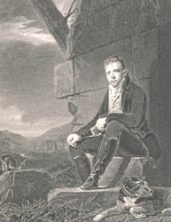

|
|
||||||
|
|
Home | Corson Collection | Biography | Works | Image Collection | Recent Publications | Correspondence | Forthcoming Events | Links | E-texts | Contact Sir Henry Raeburn's 1808 Portrait of Sir Walter ScottIn 1808, Scott's publisher Archibald Constable, delighted by the unprecedented success of Scott's second narrative poem Marmion, commissioned a portrait from Sir Henry Raeburn. Unlike the earlier portraits of Scott which were designed for a private, domestic setting, Raeburn's portrait was very much conceived with reproduction in mind. For over a decade, it would be the most frequently engraved and widely diffused image of Scott. It proved immensely influential not only in framing Scott in the public's mind-eye but in creating a prototype for Romantic portraiture. Here for the first time Scott is explicitly personified as a poet in a setting imbued with allusions to his own work. He is portrayed deep in thought, with a notebook in one hand and a pen in the other. He sits on a fallen stone before a ruined medieval tower with his favourite dog Camp at his feet. In the background may be seen the hills of Liddesdale and Hermitage Castle, which are featured both in Marmion and Minstrelsy of the Scottish Border. Click on the thumbnail to the right to see an engraving of Raeburn's 1808 portrait made by John Horsburgh. When exhibited in Edinburgh in 1809, the Scots Magazine judged it 'an admirable painting, with most appropriate scenery'. The Repository of Arts, however, wrote that: 'This last of the minstrels shows how lamentably the race is degenerated, for never was a more unpoetical physiognomy delineated on canvas; we might take him for an auctioneer or a land-surveyor, a travelling dealer or chapman: in short for any character but a bard' (III, 18:VI:1810, p. 36). Scott's friend J.S. Morritt considered it 'a most faithful likeness'. Scott's expression was 'serious and contemplative, very unlike the hilarity and vivacity then habitual to his speaking face, but quite true to what it was in the absence of such excitement'. However, Morritt felt that Raeburn had failed to convey the 'flashes of the mind within' which 'almost always lighted up' features that might otherwise appear 'commonplace and heavy' (quoted in Lockhart, Life, 2nd ed., III, 99-100).
Click the links below to view a selection from Edinburgh University Library's Corson Collection.
Bibliography
Back to Index
Last updated: 14-Mar-2005 |
|||||